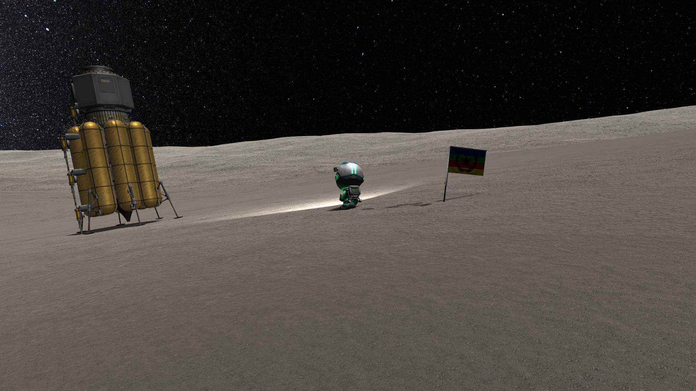
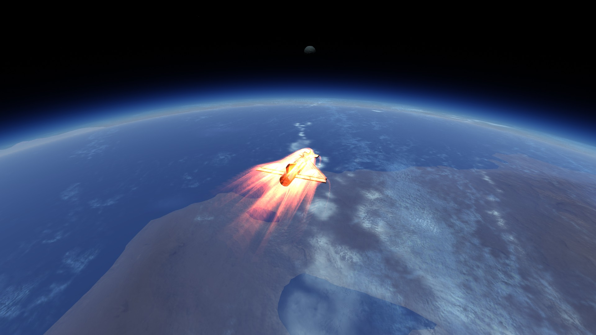
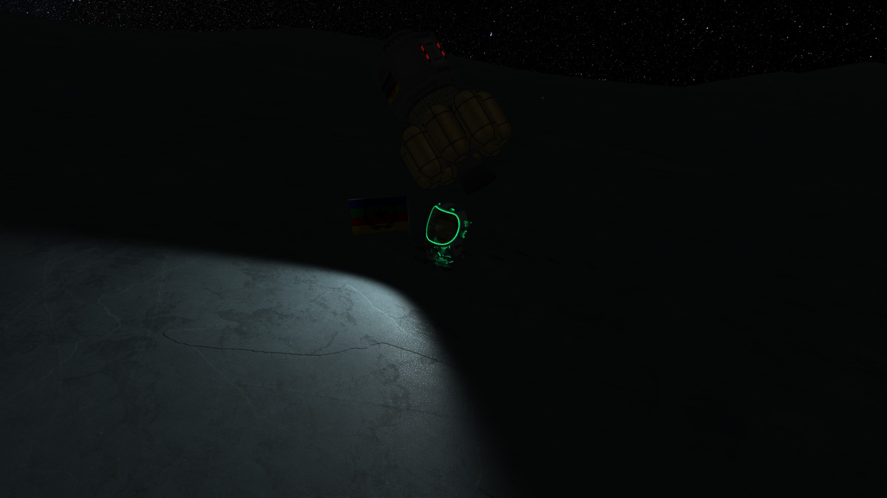
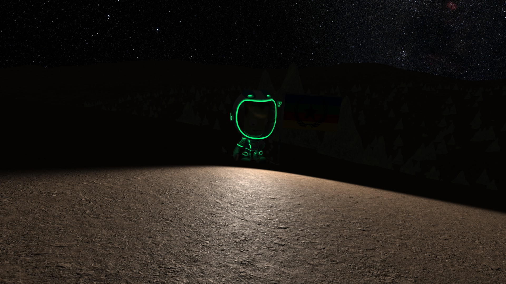
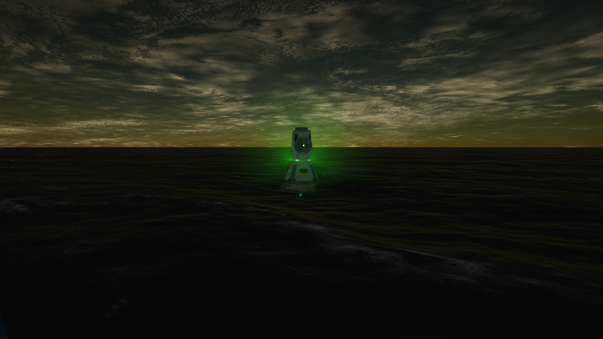

<





VANGUARD V GALLERY
Contrary to it's etymology, the Vanguard V was not the 5th mission of the Vanguard project. Instead, the V represented the 5 moons of Jool (Kerbal analog to Jupiter). The entire mission was done in a single launch, albeit with an incredibly big rocket. The rocket consisted of an extremely powerful launch stage which launched it to Low Earth Orbit, a transfer stage which consisted of a nuclear engine with a huge fuel tank, the mothership that served as both a transfer stage between Jool's moons and a transfer stage between Jool and the Earth, the Revised Tylo Lander which landed on Tylo, Jool's moon with the highest gravity, the Laythecraft which was a compact and small aircraft designed to land, takeoff, and dock with the mothership, and finally, the General Lander which landed on the rest of the moons, namely Vall, Bop, and Pol. It is the most powerful rocket the Lambda Space Agency has ever assembled and took the minds of many experts (again, me, myself, and I).